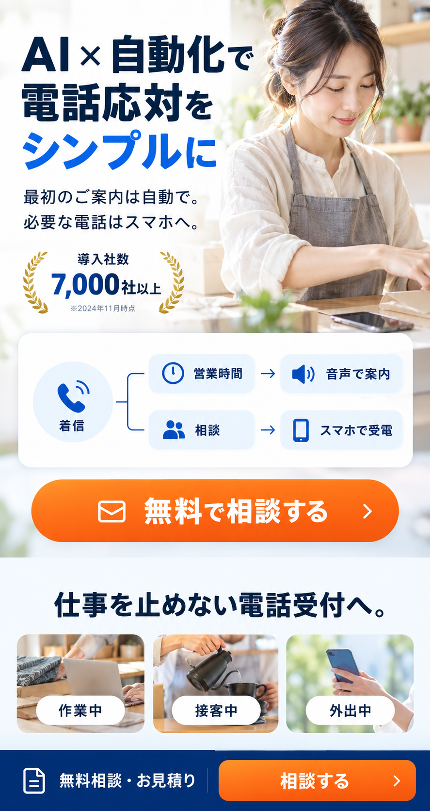
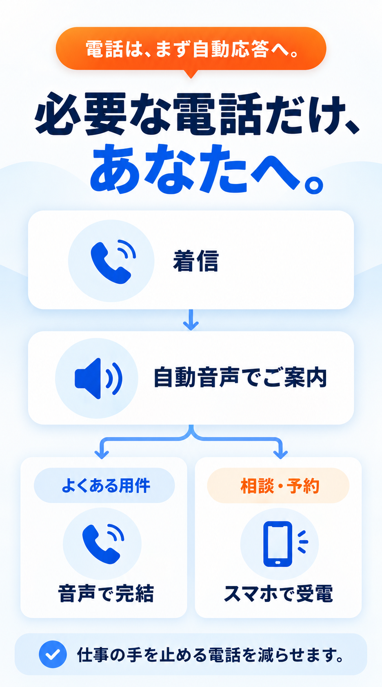
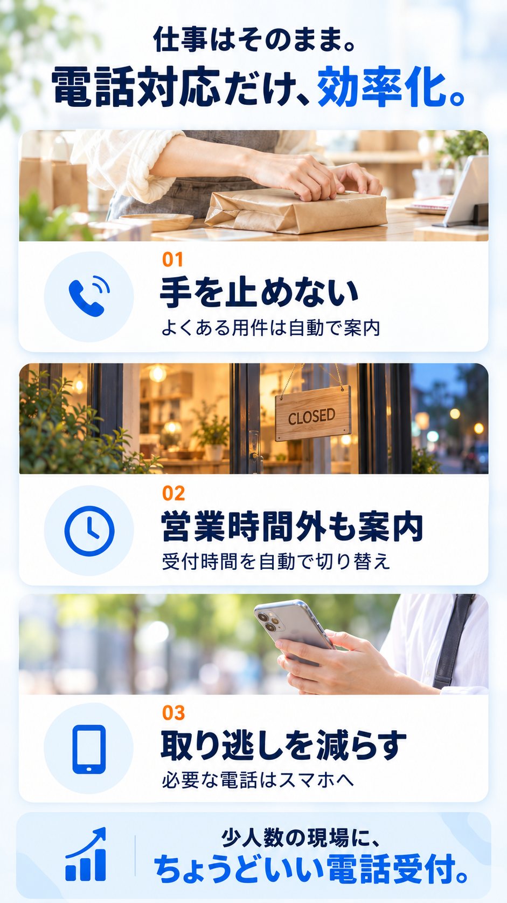
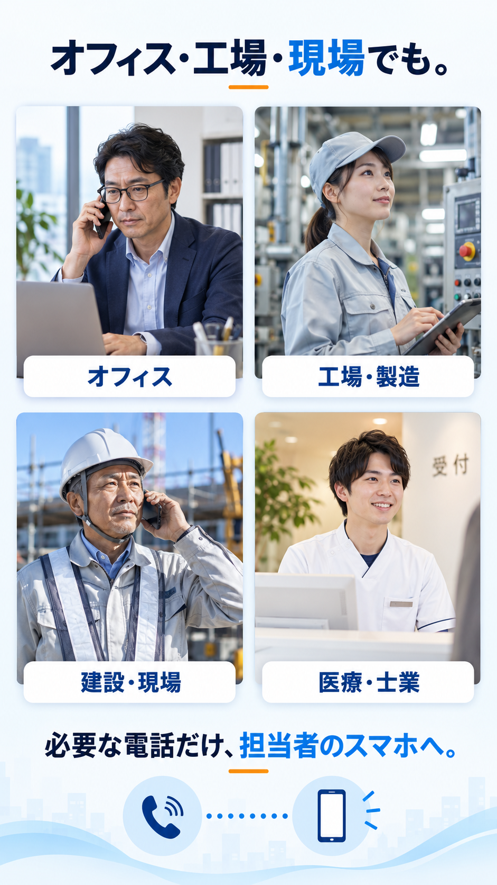
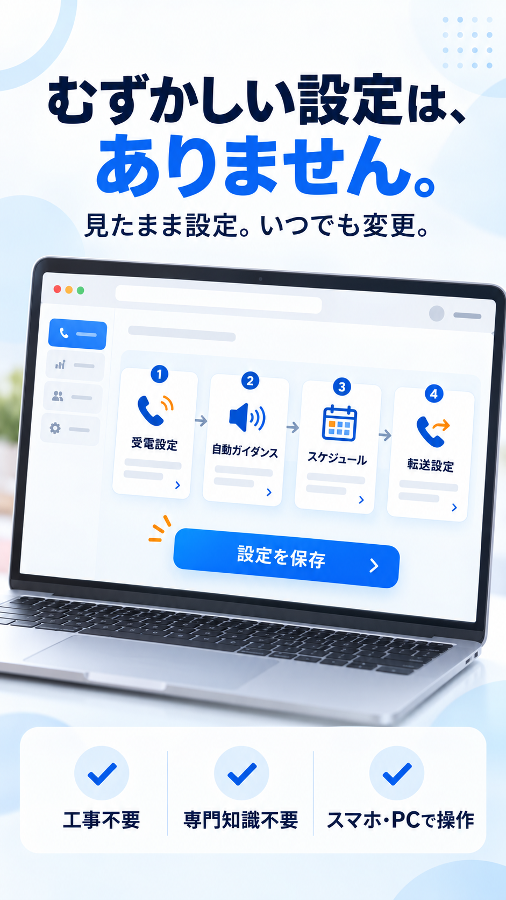
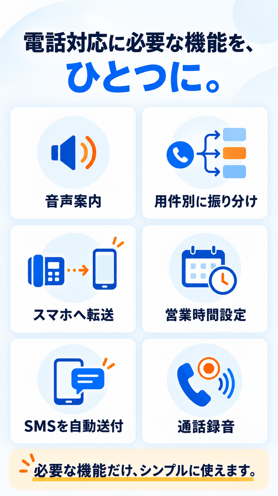
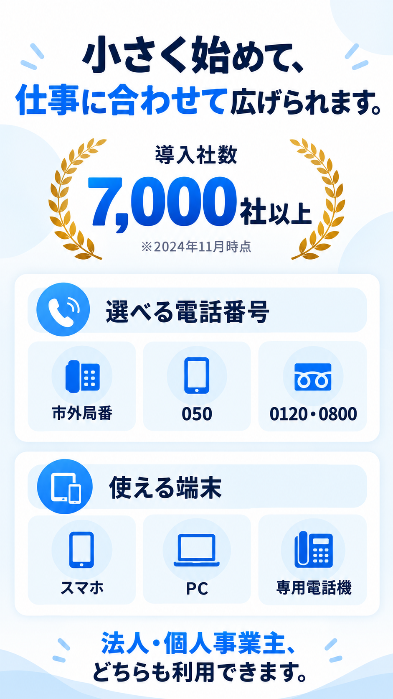
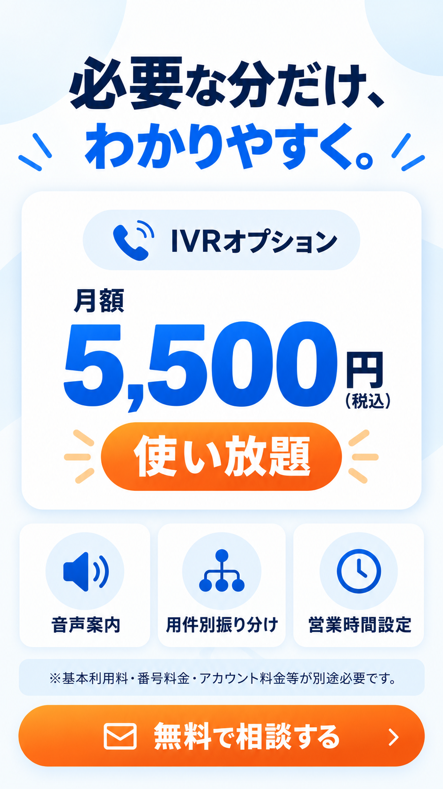

AIと自動化で電話応対をシンプルに。CLOUD PHONEのIVR・電話自動応答

IVR・電話自動応答の仕組み

電話の一次受付をIVRで自動化。よくある問い合わせは音声案内で完結し、人の対応が必要な電話だけ担当者へつなぎます。
電話自動応答で得られる3つのメリット

接客中・作業中・外出中も仕事を止めずに電話受付。営業時間外の案内やスマホ転送で、電話の取り逃しを減らします。
店舗・オフィス・工場・現場など幅広い業種で使えるIVR

- 理美容・サロン
- 飲食店
- 小売・店舗
- EC・通販
- オフィス
- 工場・製造
- 建設・現場
- 医療・士業
工事不要で簡単に設定できるクラウドPBX

工事や専門知識は不要。受電設定、自動ガイダンス、営業時間、転送先をスマホやPCから変更できます。
CLOUD PHONE IVRの主な機能

- 音声案内定型の問い合わせを自動で案内
- 用件別振り分け必要な電話だけ担当者へ接続
- スマホ転送店舗や事務所の外でも受電
- 営業時間設定曜日・時間帯で案内を切り替え
- SMS自動送付定型文やURLを発信者へ送付
- 通話録音電話対応の履歴を保存
導入社数7,000社以上。市外局番・050・0120・0800に対応

法人・個人事業主のどちらも利用可能。事業の規模や運用に合わせて、電話番号と端末を選べます。
IVRオプションは月額5,500円（税込）で使い放題

電話自動応答・IVRの疑問を解決
よくあるご質問
QIVR（自動音声応答）とは何ですか？
IVRは着信に自動音声で応答し、用件に合わせて案内・振り分け・転送する仕組みです。
Q個人事業主や小規模店舗でも使えますか？
はい。法人・個人事業主を問わず、店舗や少人数の電話受付にご利用いただけます。
Q固定電話への着信をスマホで受けられますか？
はい。会社・店舗番号への着信を、外出先のスマホで受けられます。
Qどの電話番号を利用できますか？
050、市外局番、0120・0800に対応。利用可能な市外局番は地域により異なります。
Q今使っている電話番号をそのまま使えますか？
対応する番号は、そのまま移行して利用できます。事前に対応可否を確認します。
Q導入までどれくらいかかりますか？
工事不要で、登録から最短1週間で利用開始できます。
Q電話回線の工事や専用機器は必要ですか？
スマホやPCで利用する場合、主装置や回線工事は不要です。
Q営業時間外の電話を自動案内できますか？
はい。曜日・時間帯に合わせて自動ガイダンスを切り替えられます。
Q用件ごとに電話を振り分けられますか？
はい。用件に合わせて、音声案内または担当者への転送を設定できます。
QSMSを自動送信できますか？
はい。SMSリザーブで定型文やURLを自動送付できます。
Q通話を録音できますか？
はい。スマホでの通話も録音し、対応履歴を残せます。
Q複数のスマホや拠点で受電できますか？
はい。複数端末への同時着信・段階着信に対応しています。
QIVRオプションの料金はいくらですか？
月額5,500円（税込）で使い放題です。基本利用料などは別途必要です。
Qオフィス・工場・建設現場でも利用できますか？
はい。一次対応を自動化し、必要な電話だけ担当者のスマホへつなげられます。
最短1分で入力完了